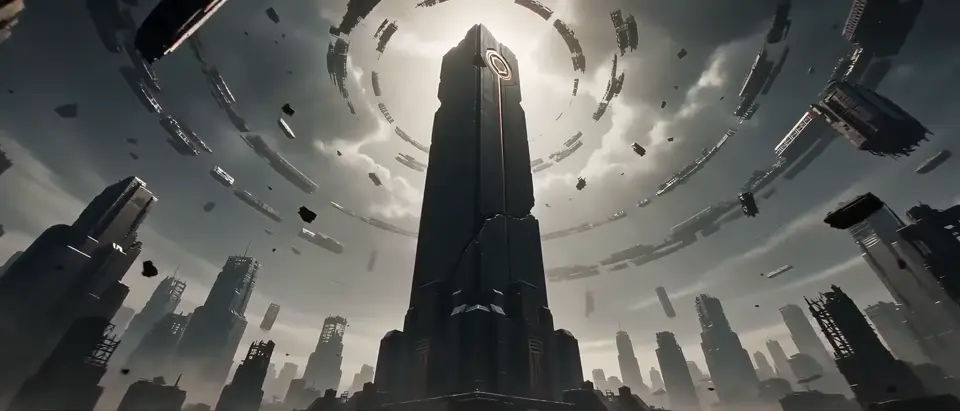

角色与机甲设定
银发角色用垂落的长披风拉出修长轮廓，与机甲的硬朗结构形成对照。重装机甲用大块装甲突出体量，持剑机甲用剑身延伸轮廓，再以橙色发光细节标出视觉焦点。三组设定把角色、装甲和武器的形态差异落实到轮廓上，即使在全身远景里也更容易区分。
以高耸建筑和低饱和的科幻场景建立世界观。

去小红书观看点击图片放大查看
银发角色用垂落的长披风拉出修长轮廓，与机甲的硬朗结构形成对照。重装机甲用大块装甲突出体量，持剑机甲用剑身延伸轮廓，再以橙色发光细节标出视觉焦点。三组设定把角色、装甲和武器的形态差异落实到轮廓上，即使在全身远景里也更容易区分。